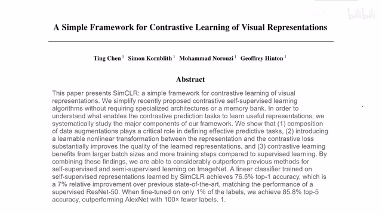
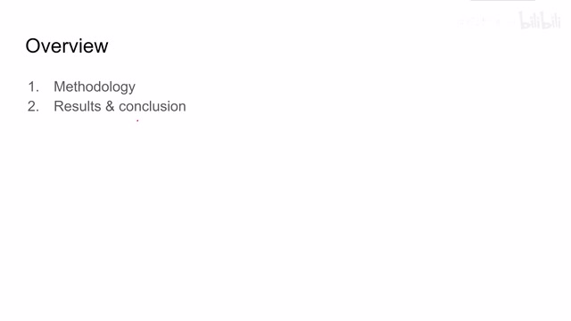
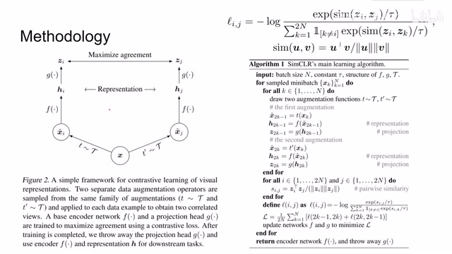
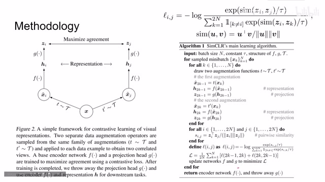
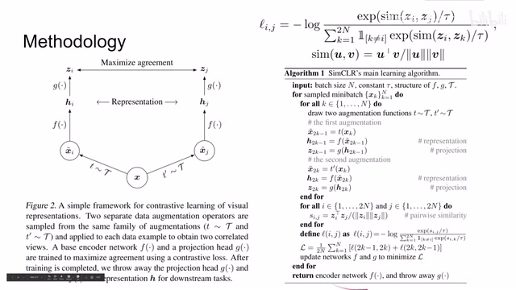
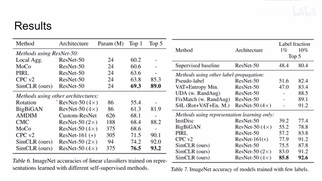
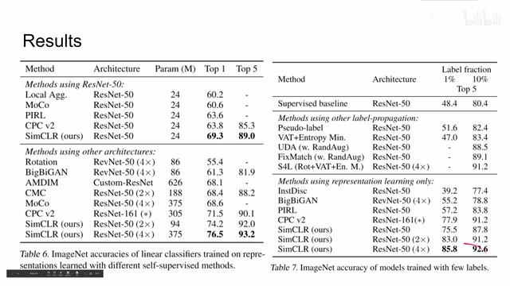
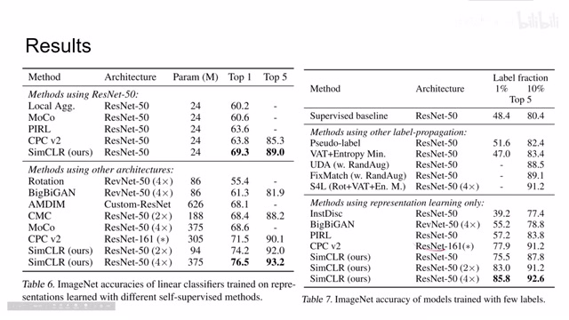
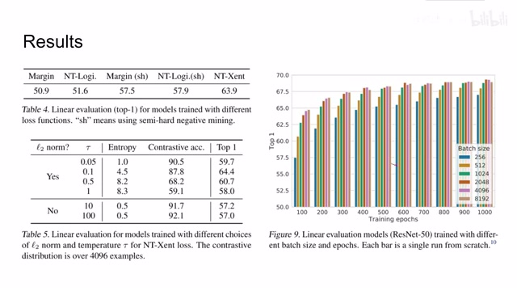

← 返回阅读库 · 原论文目录
论文讲解阅读文档 · 表征学习 · v179
SimCLR A simple framework for contrastive learning[2002.05709]
视频时长 00:03:11；讲解文字 1,207 字符；提取讲解画面 10 张。按视频原顺序阅读，每段文字保留时间戳。
文字来自整段视频的自动语音转写，按自然停顿分段，并与 PPT / 论文页面 / 演示画面对齐。未将讲解压缩为摘要；术语、数字和口述公式请结合画面及原论文核对。 阅读稿已校正规范部分明确术语误识别；原始逐字稿和每处修改记录另行保留。
讲解画面为源视频截图（640×360），不是可编辑 PPT 文件。全片按每秒 2 帧扫描内容变化，逐步展开页保留；连续动画保留代表画面。清晰度受源视频限制。
下载完整资料包 · 含离线 HTML、PDF、Word、全部 PPT 画面和字幕。
原论文与材料
A Simple Framework for Contrastive Learning of Visual Representations · 下载完整 PDF（20 页）
按时间阅读
00:00:00–00:00:13 · 画面 001

00:00:00–00:00:13 · 画面 001大家好,今天我们迅速出一篇论文,这个 SimCLR,它是非常典型的使用 Contrastive Learning 来进行这个 Self-Supervised Learning 的一种方法。那么今天的视频呢,我们就直接讲本文的具体实践,还有作者汇报的一些结果。那么如果你已经熟悉 BYOL、SimSiam,你会发现它们都非常亲切的,都是一个图像进来,采用不同的图像增强策略来产生两种样本。
00:00:13–00:00:19 · 画面 002

00:00:13–00:00:19 · 画面 00200:00:19–00:01:49 · 画面 003

00:00:19–00:01:49 · 画面 003然后呢送到我们的 encoder 里面再送到 projector 里面 projector 进入 latent space 之后得到这个 vector z 我们呢来做这个 loss 那对于同一张图像产生的这个 z 呢我们把它靠近不同图像产生的 z 呢我们让它远离那么在这里呢本文使用的 loss function 呢是一个形如这样的一个 loss function 这里的 sim 呢就是两个样本之间的夹角分子的部分呢是两个向量的夹角分母部分呢是左边这个向量跟其他所有的样本它们的相似程度那么对于同一图图像的两个样本呢我们当然是希望它们在 latent space 里面非常靠近而对于不同的样本呢我们就希望它们在 latent space 里面的尽量远离那么快速过一遍本文的算法就是这里我有 n 个样本我通过两路这个 Encoder 和这个 Projection
这样子一共得到这个 2N 个样本比如左边这路是奇数位的右边这路是偶数位的然后我们对着 2N 个样本两两之间构建 loss 就是形容这样的一个 loss 把它们求一下平均然后更新一下这个 encoder 和这个 projection 就可以了那么同样的我们会保留我们的 encoder 对于这 projection network 我们就丢弃了那么看到结果
00:01:49–00:01:50 · 画面 004

00:01:49–00:01:50 · 画面 00400:01:50–00:01:54 · 画面 005

00:01:50–00:01:54 · 画面 00500:01:54–00:02:10 · 画面 006

00:01:54–00:02:10 · 画面 006本文在提出的时候呢相对于前面这些 unsupervised 方法那么效果呢还是很不错的这里呢作者也汇报了使用少量 label 来做 training 的时候效果是怎么样的可以看到本文提出的方法呢肯定是 outperform 之前的所有的方法那么其他的呢像不同的这个 loss function 还有不同的这个 temperature 这里呢作者都有实验
00:02:10–00:02:14 · 画面 007

00:02:10–00:02:14 · 画面 00700:02:14–00:02:16 · 画面 008

00:02:14–00:02:16 · 画面 00800:02:16–00:03:11 · 画面 009
00:02:16–00:03:11 · 画面 009如果你感兴趣的话呢可以去读一下原文那么还有一件我们都知道的事情就是 SIMCLR 它对这个 batch size 是非常敏感的也就是说如果你的 batch size 太小那么每次训练的时候呢就没有足够的样本他们进行相互的对比进行学习所以增加这个 batch size 对模型性能的提升呢是很有帮助的好的那么以上就是我对这篇论文的简单的分析因为我们之前已经介绍了 SimSiam、BYOL 这种东西所以呢我们就不再对这篇论文做详细的介绍了还是如果你感兴趣的话呢非常推荐你去看论文的原文还有很多的实验呢我们在这里没有提及但也都是很扎实的工作好的那么感谢您的收看再见
00:03:11–00:03:11 · 画面 010

00:03:11–00:03:11 · 画面 010转写与来源说明 · 0 个自动复核提示
保留 7 个原始语音片段，0 个片段触发自动复核提示。提示仅用于定位可能的术语、重复或识别问题，不等于已确认错误。
讲解画面为源视频截图（640×360），不是可编辑 PPT 文件。全片按每秒 2 帧扫描内容变化，逐步展开页保留；连续动画保留代表画面。清晰度受源视频限制。
原视频：paper/合集_2026-10-16_表征学习/[论文简析]SimCLR A simple framework for contrastive learning[2002.05709].mp4
SHA-256：6fe7db313cd5476620dfc76de142690be302614f8ab3f9bb3ebb0dcfa7bf4920
全文按视频语音与画面制作。原论文可从上方链接下载；完整资料包保留全文、原始逐字稿、字幕和校对记录。